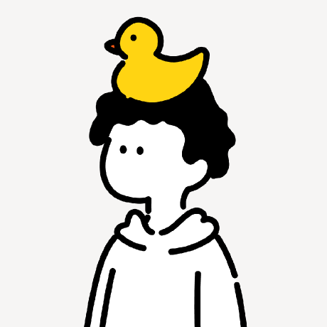

Chat en tiempo real — sin magia, sin misterio
2025-03-30

¿A dónde va? 🤔
Siempre hay un servidor en el medio. WhatsApp, Instagram, Slack, Discord — todos funcionan igual.
Con HTTP tienes que preguntar cada segundo:
Con HTTP tienes que preguntar cada segundo:
Esto se llama polling — y es como llamar al cartero cada minuto para preguntar si llegó algo. 📬
Y de esas 1.000 requests… el 99% responden “No hay nada.”
Le estás gritando al cartero mil veces y casi nunca tiene carta.
HTTP = Cartas por correo 📬
Escribes → Mandas → Esperas → Recibes respuesta → Se termina
Para otra cosa: empiezas de cero otra vez.
WebSocket = Llamada telefónica ☎️
Marcas una vez → Canal abierto → Hablas cuando quieras → Escuchas cuando quieras
La línea no se corta hasta que tú la cierras.
Socket.io es una librería de JavaScript que hace que los WebSockets sean fáciles de usar.
Imagina que construir WebSocket nativo es como fabricar tu propio teléfono desde cero.
Socket.io ya te da el teléfono armado. 📞
✅ Salas de chat incluidas
✅ Reconexión automática
✅ Funciona en todos los browsers
✅ Enviar mensajes a grupos
✅ Detectar quién se conecta y desconecta
En Socket.io todo funciona con eventos. Un evento es: algo pasó, tiene un nombre.
Exactamente como la vida real: suena el timbre → evento “timbre” → abres la puerta.
Con emit y on construyes cualquier feature de un chat real. Eso es todo.
¿Alguna vez te preguntaste cómo funciona eso?
Cada letra que tipeas dispara un evento "escribiendo". El servidor lo reenvía. Los demás lo ven. Cuando el mensaje llega → el indicador desaparece.
Escribe un mensaje en cualquier ventana 👆 — así funciona Socket.io por dentro.
Recibe → reenvía. Eso es todo el corazón del servidor de chat.
emit = envío · on = escucho
Dos palabras. Un chat funcionando.
emit para enviar, on para escuchar
Tip
Recursos para seguir
socket.io/get-started/chat — tutorial oficial
nextjs.org/learn — curso gratuito
Código completo de este webinar → link en el chat 👇
¡Gracias! 🎉
@josephino
Preguntas en el chat ahora 🎙️
Webinar — Chat en Tiempo Real · Next.js · Socket.io